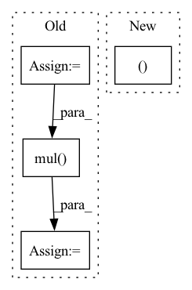

Pattern ID :26020

Before Change
// compute embedding
all_users, all_items = self.compute_embedding()
users_emb = all_users[users]
items_emb = all_items[items]
inner_pro = torch.mul(users_emb, items_emb)
gamma = torch.sum(inner_pro, dim=1)
return gamma
def predict(self, interaction):
After Change
embeddings_list.append(all_embeddings)
lightgcn_all_embeddings = torch.stack(embeddings_list, dim=1)
lightgcn_all_embeddings = torch.mean(lightgcn_all_embeddings, dim=1)
user_all_embeddings, item_all_embeddings = torch.split(lightgcn_all_embeddings, [self.n_users, self.n_items])
return user_all_embeddings, item_all_embeddings
def calculate_loss(self, interaction):
In pattern: SUPERPATTERN
Frequency: 4
Non-data size: 4
Instances
Fragment ID: 78520172
Project Name: rucaibox/recbole
Commit Name: 210deb20fdbedae80baa4e808ed08326a696027f
Time: 2020-09-12
Author: 2015201909@ruc.edu.cn
File Name: recbox/model/general_recommender/lightgcn.py
M Class Name: LightGCN
N Class Name: LightGCN
M Method Name: forward(1)
N Method Name: forward(3)
M Parent Class: GeneralRecommender
N Parent Class: GeneralRecommender
M File Name: recbox/model/general_recommender/lightgcn.py
N File Name: recbox/model/general_recommender/lightgcn.py
M Start Line: 140
M End Line: 147
N Start Line: 87
N End Line: 97
'>
Before Change
num_float_field = float_fields.shape[-1]
// [batch_size, max_item_length, num_float_field]
index = (
torch.arange(0, num_float_field)
.unsqueeze(0)
.expand_as(float_fields)
.long()
.to(self.device)
)
// [batch_size, max_item_length, num_float_field, embed_dim]
float_embedding = self.float_embedding_table[type](index)
float_embedding = torch.mul(float_embedding, float_fields.unsqueeze(-1))
return float_embedding
def embed_token_fields(self, token_fields, type):
After Change
return None
if type == "item":
embedding_shape = float_fields.shape[:-1] + (-1,)
float_fields = float_fields.reshape(-1, float_fields.shape[-2], float_fields.shape[-1])
float_embedding = self.float_embedding_table[type](float_fields)
float_embedding = float_embedding.view(embedding_shape)
'>
Fragment ID: 78520121
Project Name: rucaibox/recbole
Commit Name: 3ea75a6e4e9102223ea8fb80f9880b2bb423fbf1
Time: 2022-07-16
Author: 1204216974@qq.com
File Name: recbole/model/layers.py
M Class Name: ContextSeqEmbAbstractLayer
N Class Name: ContextSeqEmbAbstractLayer
M Method Name: embed_float_fields(4)
N Method Name: embed_float_fields(4)
M Parent Class: nn.Module
N Parent Class: nn.Module
M File Name: recbole/model/layers.py
N File Name: recbole/model/layers.py
M Start Line: 917
M End Line: 932
N Start Line: 955
N End Line: 966
'>
Before Change
if not args.prefetcher:
input, target = input.cuda(), target.cuda()
if args.mixup > 0.:
lam = 1.
if not args.mixup_off_epoch or epoch < args.mixup_off_epoch:
lam = np.random.beta(args.mixup, args.mixup)
input = input.mul(lam).add_(1 - lam, input.flip(0))
target = mixup_target(target, args.num_classes, lam, args.smoothing)
output = model(input)
After Change
if not args.prefetcher:
input, target = input.cuda(), target.cuda()
if args.mixup > 0.:
input, target = mixup_batch(
input, target,
alpha=args.mixup, num_classes=args.num_classes, smoothing=args.smoothing,
disable=args.mixup_off_epoch and epoch >= args.mixup_off_epoch)
'>
Fragment ID: 78520198
Project Name: feng-lab/pytorch-image-models
Commit Name: 232ab7fb12ba082e6d4039c7a7c7f2701caa0a71
Time: 2019-12-20
Author: rwightman@gmail.com
File Name: train.py
M Class Name: AnonimousClass
N Class Name: AnonimousClass
M Method Name: train_epoch(11)
N Method Name: train_epoch(11)
M Parent Class:
N Parent Class:
M File Name: train.py
N File Name: train.py
M Start Line: 454
M End Line: 461
N Start Line: 470
N End Line: 476
'>
Before Change
reset_node = self._create_node(node_features, adjacency_matrix, reset_node_index)
reset_edge = self._create_edge(node, reset_node)
reset_edge_slice = reset_edge.get_edge_slice()
reset_gate_output = self._pass_through_reset_gate(messages, node, reset_edge, node_features)
messages_from_the_other_neighbors += to.mul(reset_gate_output, messages[reset_edge_slice])
return self.u_gru_current_memory_message[edge_slice].matmul(messages_from_the_other_neighbors)
def _pass_through_reset_gate(self,
messages: to.Tensor,
After Change
to.add(
to.add(self.w_gru_update_gate_features[edge_slice].matmul(node_features[node.node_id]),
self.u_gru_update_gate[edge_slice].matmul(messages[node.node_id, reset_node_index])),
self.b_gru_update_gate)).long(), messages[node.node_id, reset_node_index])
for reset_node_index in neighbors_slice]))
def _pass_through_reset_gate(self,
'>
Fragment ID: 78520193
Project Name: kovanostra/message-passing-neural-network
Commit Name: 46b48a64ed3b792489f1ffde06ae212a7af5471a
Time: 2020-05-02
Author: kovanostra@gmail.com
File Name: message_passing_nn/model/graph_encoder.py
M Class Name: GraphEncoder
N Class Name: GraphEncoder
M Method Name: _keep_or_reset_messages(5)
N Method Name: _keep_or_reset_messages(6)
M Parent Class: nn.Module
N Parent Class: nn.Module
M File Name: message_passing_nn/model/graph_encoder.py
N File Name: message_passing_nn/model/graph_encoder.py
M Start Line: 198
M End Line: 208
N Start Line: 203
N End Line: 210